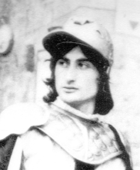
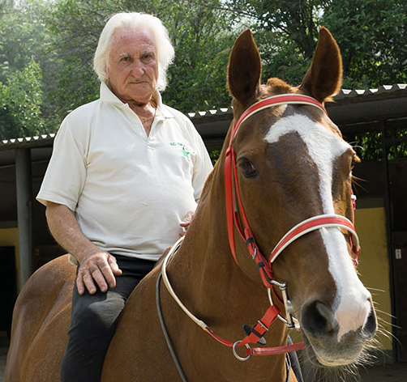
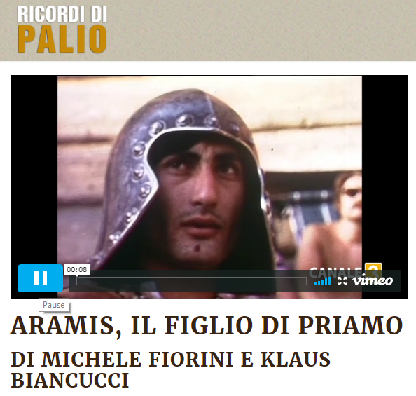

|
(Aramis) 0/3 Nato a Acquaviva di Montepulciano (SI) il 16 marzo 1950 Figlio di Morino IV (Priamo Ducci) 
1 Palio Straordinario    
Il fantino del Palio che cura
i cavalli della Municipale di Firenze I ricordi di Piazza del Campo mentre accudisce i puledri alle Cascine. «Ho conosciuto Aceto quando aveva 18 anni. Venne a casa mia ed era convinto di diventare un campione» Che ci fa a Firenze un ex fantino del Palio di Siena? Lui è un ragazzo di Acquaviva di Montepulciano, a cavallo e con i cavalli ci ha passato una vita, fino ad arrivare al Parco delle Cascine. Costiero Ducci, passato alla storia del Palio di Siena come Aramis. Figlio di Priamo Ducci detto Morino, che corse il primo palio del dopoguerra, quello del 2 luglio 1945. Oggi lavora nel reparto a cavallo della Polizia Municipale, con sede di fronte al Prato del Quercione. Cura, accudisce e pulisce i puledri prima che escano per servizi e cerimonie. Com’è il tragitto di vita Montepulciano-Siena-Firenze? Andiamo al contrario: «Finita la mia esperienza con il Palio a metà degli anni Settanta, mi trasferii a Firenze all’ippodromo del Visarno. Non mi interessava granchè correre all’ippodromo, preferivo accudire i cavalli. Era un buon lavoro e per l’ippica erano tempi molto diversi rispetto a ora». Passa qualche anno e arriva il primo passaggio dai vigili: «Era il 1992 e un ex fantino, la cui scuderia lavorava nella cura dei cavalli della Municipale, mi chiese se potevo dargli una mano in questa attività. Entrai in società con lui ma rimasi solo qualche anno». Poi si sposta nella zona di Monte Morello per gestire un maneggio, 14 anni di attività comprando e vendendo cavalli, quindi il ritorno in riva all’Arno, di nuovo con la Polizia Municipale: «Entrai in società con il precedente gestore dell’appalto per la cura dei cavalli e ci sono tuttora con la mia scuderia, la Major». Leggenda vuole che con questi animali ci si debba svegliare presto: «Entro in servizio alle 6, faccio il turno fino a mezzogiorno, poi di nuovo 14-20. Ogni giorno, 365 giorni all’anno. Lo faccio da 15 anni. Quando serve la pattuglia, per un servizio di controllo o anche solo per una cerimonia, i cavalli sono pronti tirati a lucido». Per lui, i cavalli sono la vita. Ma prima di questa routine, chi è stato, a Siena, Aramis? Soprannominato così per il pizzetto da moschettiere che portava da giovane, gli almanacchi riportano 3 palii corsi, tutti nel 1972, quando ci fu anche un palio straordinario a settembre. La storia racconta anche di un palio nell’agosto 1973: «Montavo nella Chiocciola, avrei puntato a vincere ma la dirigenza della contrada prendeva i soldi dalla Torre, capitanata da Artemio Franchi, per farla vincere. La sera prima del palio mi “smontarono”, mi sostituirono con un altro fantino che il giorno dopo alla mossa favorì la Torre». Che comunque poi non vinse. Un’esperienza in mezzo a personaggi leggendari («Conobbi Aceto quando aveva 18 anni, venne a casa mia, ci stette una settimana e già allora era convinto di diventare un campione»), amici veri come Leonardo Viti detto Canapino («Era del mio stesso paese, mi spiegava tante cose»). Ma Costiero non si spiega, se prima non si racconta di Priamo, il babbo, che gli ha trasmesso la passione: «Era duro di carattere, ci si parlava poco ma ci si intendeva con lo sguardo. Rubavo dalla sua esperienza guardandolo. Coi cavalli era un genio». Così esperto che una volta impressionò anche il Re della Piazza: «Comprammo un cavallo da Aceto, l’animale però appoggiava gli anteriori storti. Mio babbo chiamò il maniscalco e gli spiegò come sistemarlo. Una volta ferrato era perfetto. Qualche tempo dopo, mio babbo chiese ad Aceto di venire a montarlo a una corsa a Monteroni, vinse quella gara. Passò qualche mese e Aceto tornò da noi: ricomprò il cavallo ad un prezzo nove volte superiore di quando ce l’aveva venduto». Fantino, allenatore di cavalli, ma non solo. Anche modello per Renato Guttuso: «Palio di agosto ’72, montavo nell’Istrice, alla cena della prova generale mi si avvicina un signore anziano con un tovagliolo in mano e un pennarello. Mi fa una specie di ritratto e lo firma ‘Guttuso’. Il capitano dell’Istrice era accanto a me, mi chiese se potevo donare quello schizzo alla contrada e io dissi sì, ero un ragazzo di campagna, che ne sapevo io chi era Guttuso. Peccato, perché avrei avuto un Guttuso in casa». Giovanni Ciappelli per Storiedifirenze |